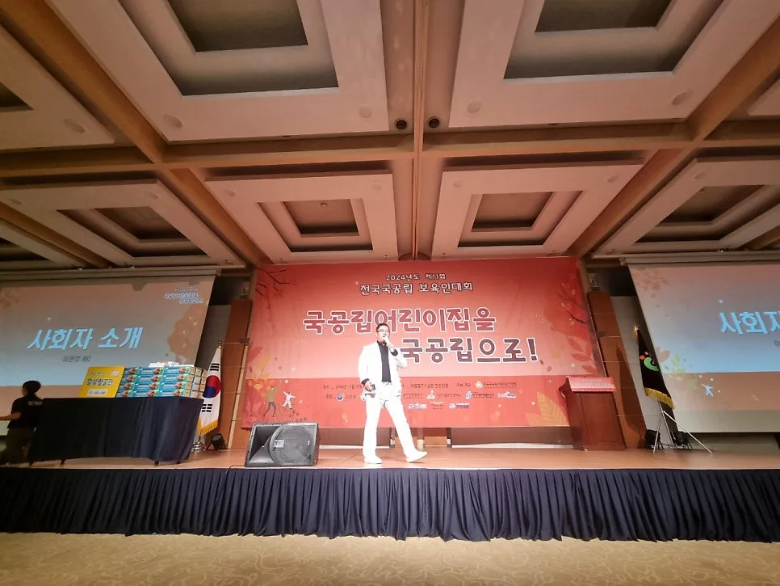
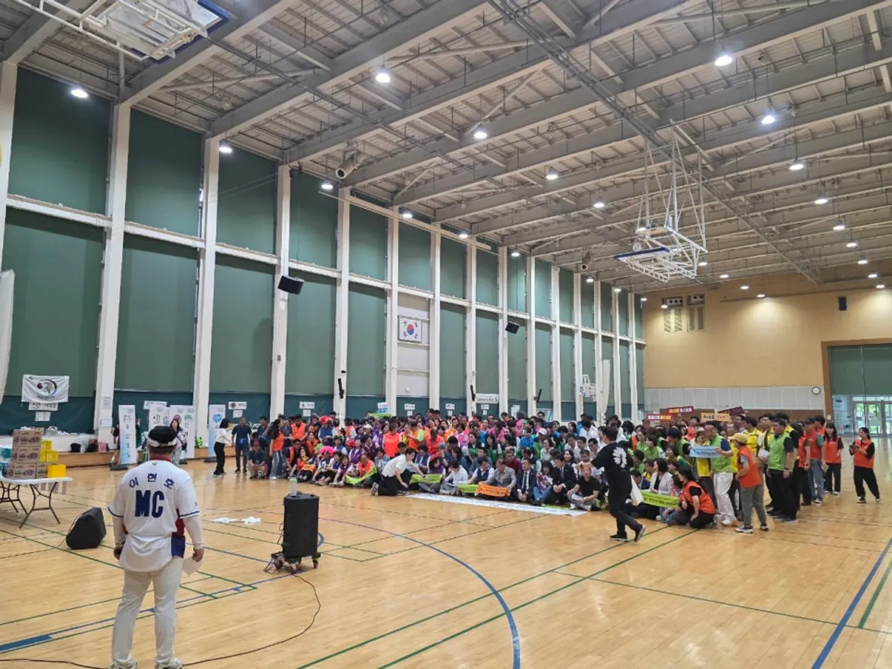
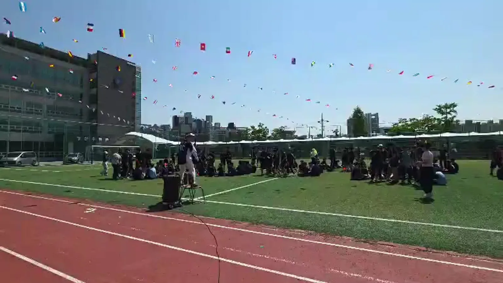

성북 행사 준비 · 2026년 10월 28일
성북 행사 MC 섭외 — 행사 성격별 진행자 고르기와 사전 협의
성북 행사 MC 섭외에서 가장 먼저 볼 것은 그 MC가 우리 행사와 같은 성격의 행사를 진행하는 모습입니다. 기념식처럼 격식이 필요한 자리와 운동회처럼 참가자를 움직이게 해야 하는 자리는 필요한 진행 능력이 다릅니다. 진행 영상을 먼저 보고, 행사 전에 무엇을 맞춰야 하는지 정리했습니다.

- MC를 고를 때는 말솜씨보다 우리 행사와 같은 성격의 행사를 진행하는 영상을 먼저 확인합니다.
- 격식 있는 행사는 정확한 호명과 순서, 참여형 행사는 참가자를 움직이게 하는 진행이 중요합니다.
- 섭외가 정해지면 큐시트 · 내빈 명단 · 음향 담당자를 행사 전에 MC와 맞춥니다.
- 힐링엔터테인먼트는 대표 MC 이현호가 직접 진행하며, 억지 웃음 · 참가자 비하 없는 진행을 원칙으로 합니다.
1. 성북 행사 MC 섭외 전에 확인할 것
힐링엔터테인먼트는 노원 본사에서 성북구청까지 차로 약 10분 · 9.8km(막히지 않을 때) 거리입니다. 성북 안의 학교 · 기관 · 행사장(길음동 · 정릉동 · 돈암동 · 석관동 · 장위동 · 월곡동 · 안암동 등)은 행사 전에 한 번 들러 무대와 음향 위치를 함께 보기에도 가깝습니다. 섭외 상담 전에 아래를 정리해 두시면 좋습니다.
| 확인할 것 | 왜 필요한가 |
|---|---|
| 행사 성격 | 기념식 · 운동회 · 워크숍 · 송년회에 따라 진행 방식이 다르다 |
| 참가자 | 연령대 · 인원 · 서로 아는 사이인지 |
| 진행 범위 | 사회만인지, 레크리에이션 · 게임까지인지 |
| 시간 | 전체 길이와 MC가 맡는 구간 |
| 장소 · 음향 | 마이크 · 스피커를 누가 준비하는지 |
2. 행사 성격별로 MC에게 필요한 것
같은 MC라도 행사마다 해야 할 일이 다릅니다. 기관 행사 · 기념식은 내빈 호명과 순서가 틀리지 않는 것이 가장 중요하고, 체육대회 · 운동회는 참가자를 움직이게 하는 힘이, 송년회는 분위기를 올렸다 내렸다 하는 흐름이 중요합니다.
| 행사 | MC에게 필요한 것 | 확인 방법 |
|---|---|---|
| 기념식 · 회원 대회 | 정확한 호명 · 차분한 순서 진행 | 식순 진행 영상 |
| 체육대회 · 운동회 | 종목 설명 · 점수 발표 · 참가자 이끌기 | 운동장 진행 영상 |
| 워크숍 · 팀빌딩 | 처음 만난 사람을 섞는 게임 진행 | 실내 레크리에이션 영상 |
| 송년회 · 신년회 | 식순과 레크리에이션을 오가는 흐름 | 연회장 진행 영상 |
| 학교 · 청소년 행사 | 학생 눈높이 · 떼창 · 랜덤플레이 댄스 | 학교 행사 영상 |
힐링엔터테인먼트의 분야별 진행 모습은 영상 페이지에 모아 두었습니다. 같은 프로그램, 같은 시간이라도 누가 진행하느냐에 따라 분위기가 달라지니 영상을 먼저 보시길 권합니다.

3. 대표 MC 이현호 — 진행 원칙과 자격
힐링엔터테인먼트는 대표 MC 이현호가 직접 진행합니다. 억지 웃음이나 참가자 비하 없이 자연스럽게 참여를 끌어내는 것이 진행 원칙이고, 모두가 어깨를 맞대고 함께 움직이는 「대동놀이」가 시그니처 프로그램입니다.
- 레크리에이션 지도자 1급 · 웃음치료사 1급 · 리더십강사 1급 · 펀마스터 강사
- 국민안전교육 전문인력 · KEMA CPR · AED
- 국외여행인솔자(T/C) · 수상구조원 · 래프팅 강사
자세한 프로필은 회사소개에 있습니다.
4. 섭외 뒤 사전 협의 체크리스트
MC가 정해졌다면 행사 전에 맞출 것이 남아 있습니다. 당일 아침에 처음 맞추면 호명 실수나 순서 꼬임이 생기기 쉽습니다.
- 큐시트: 순서 · 시간 · 담당자를 적은 진행표를 미리 공유합니다.
- 내빈 명단: 이름 · 직함 · 호명 순서를 확정해 전날까지 보냅니다.
- 시상 · 경품: 수상자 명단과 시상자, 경품 순서를 정합니다.
- 음향: 마이크 수, 음악 재생, 영상 송출을 누가 맡는지 정합니다.
- 돌발 상황: 내빈 지각 · 우천 · 순서 변경 때 연락할 담당자를 정합니다.

5. 견적 문의 항목
자동 견적서에서 아래 항목을 골라 날짜 · 장소 · 행사 성격과 함께 보내 주시면 확인 후 견적을 안내드립니다. MC 진행만 필요하셔도 됩니다.
| 항목 | 내용 |
|---|---|
| 대표 MC 이현호 진행 | 행사 전체 진행 |
| 레크리에이션 강사 | 체육대회 · 워크숍 · 캠프 |
| 대동놀이 · 참여 프로그램 | 전원이 함께하는 마무리 |
| 음향 (소형) | 실내 · 마이크 |
| 무선 마이크 추가 | 핸드 / 핀 마이크 |
| 가수 섭외 | 축하 공연 |
성북 지역 안내는 성북 행사 안내에 있습니다. 송년회 진행이라면 의정부 송년회 MC 글도 참고하세요.
자주 묻는 질문
사회만 보고 레크리에이션은 빼도 되나요?
네. 기념식처럼 사회만 필요한 행사는 식순 진행만 맡습니다. 상담 때 진행 범위를 알려 주세요.
음향 장비가 없는 장소인데 MC만 오면 되나요?
마이크와 스피커가 없으면 진행이 어렵습니다. 장소에 음향 설비가 있는지 먼저 확인하시고, 없으면 음향 항목을 함께 고르세요.
MC 대본은 누가 쓰나요?
큐시트와 내빈 명단을 받아 MC가 진행 멘트를 준비합니다. 꼭 들어가야 할 인사말이나 안내 문구가 있으면 미리 보내 주세요.
행사 전에 MC와 직접 만나 볼 수 있나요?
상담은 전화 · 문자 · 카톡으로 하고, 필요하면 방문 상담도 미리 연락 주신 뒤 가능합니다. 행사장 사전 확인이 필요하면 날짜를 함께 정합니다.
행사 날짜가 정해지셨나요?
날짜 · 지역 · 인원 · 행사 종류만 알려 주시면 행사에 맞춰 상담 · 견적을 안내드립니다. 행사 중엔 통화가 어려우니 문자 · 카톡을 남겨 주세요.